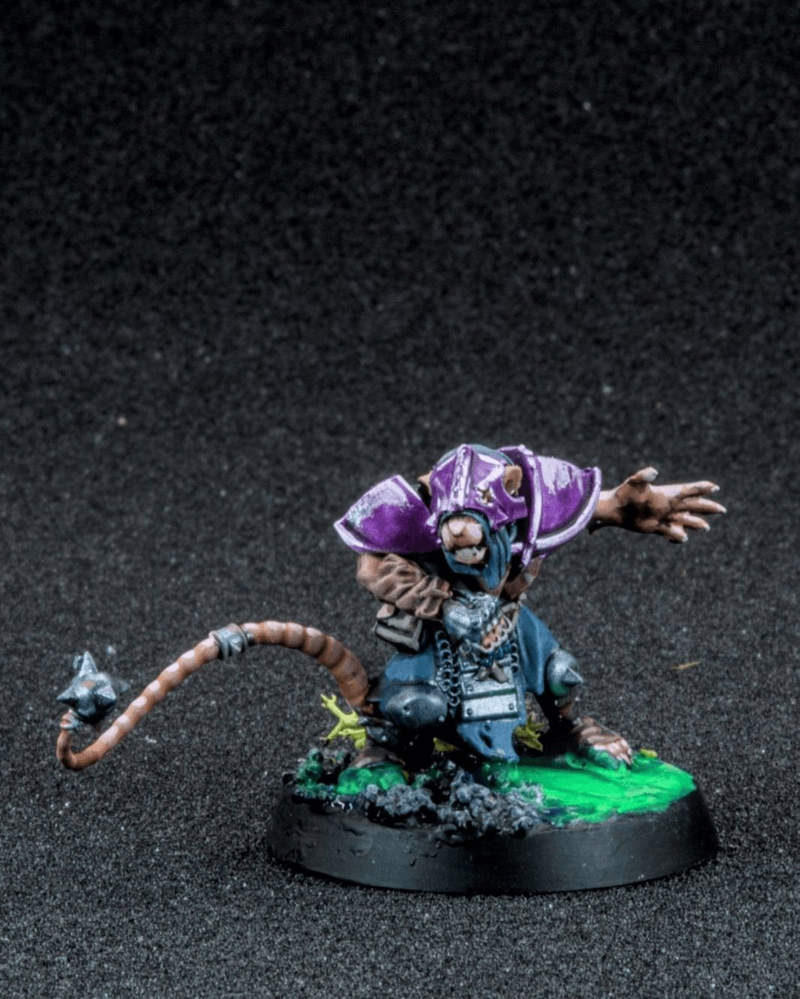
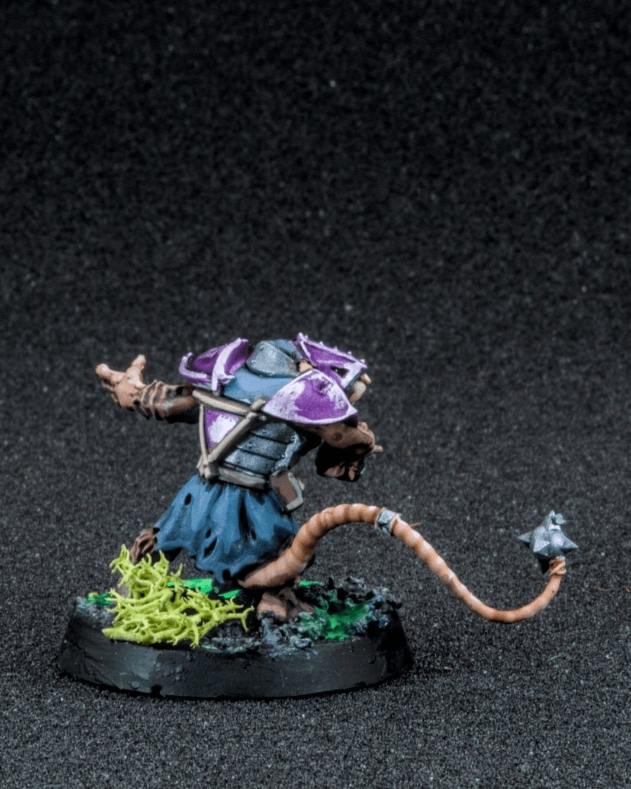
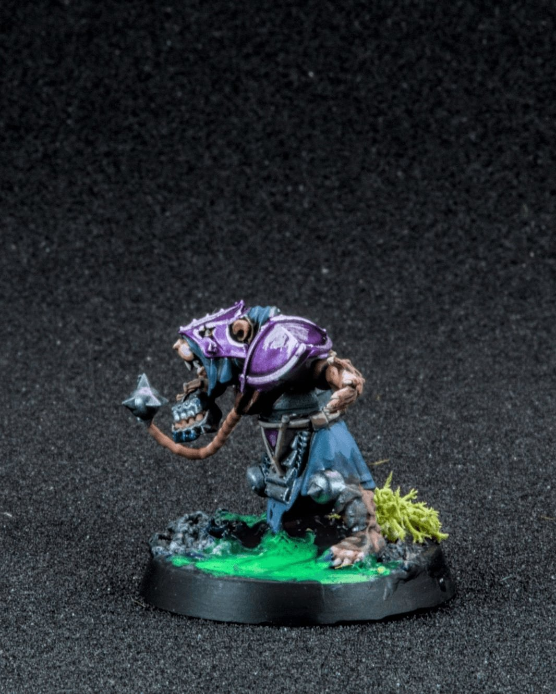
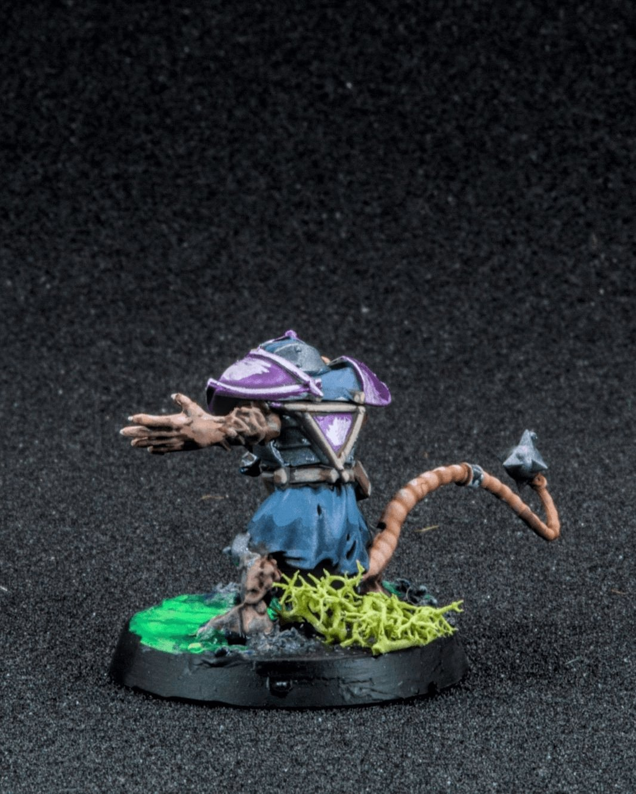
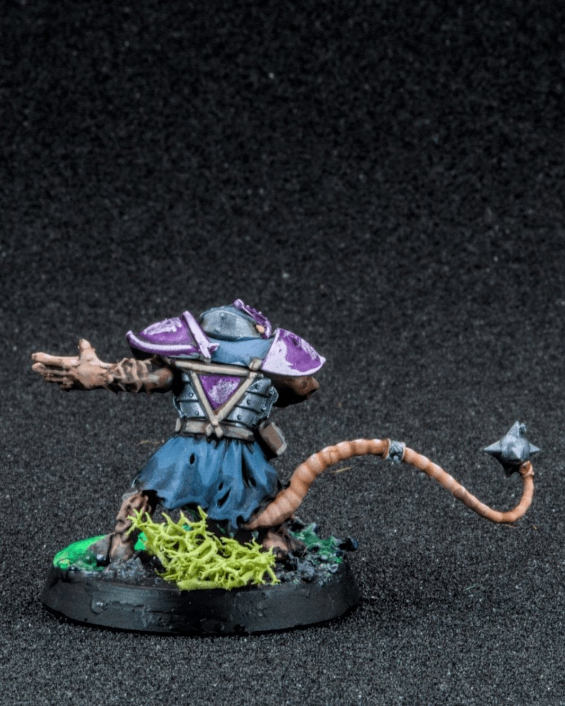
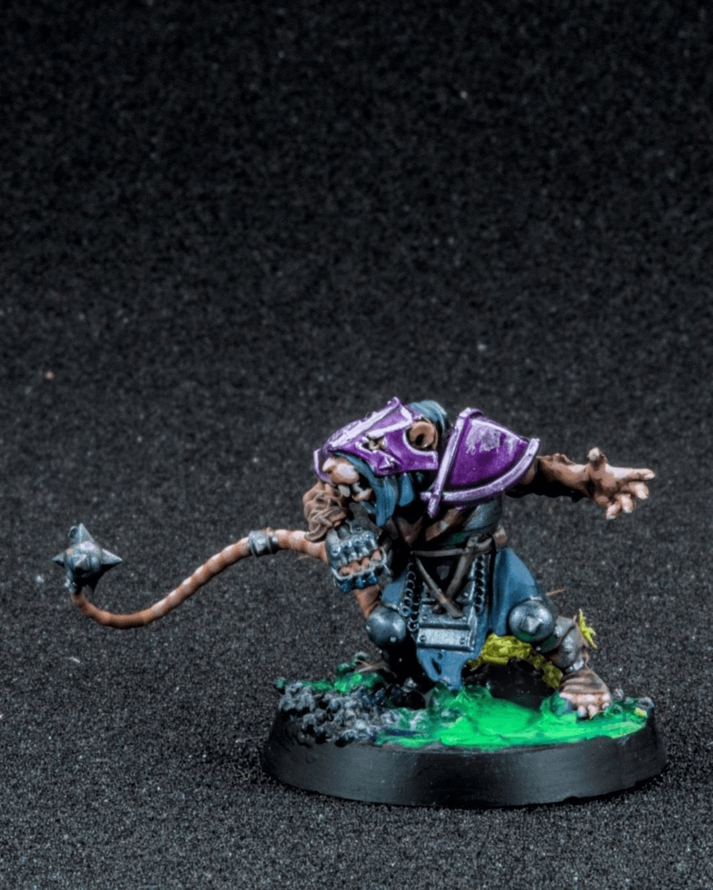
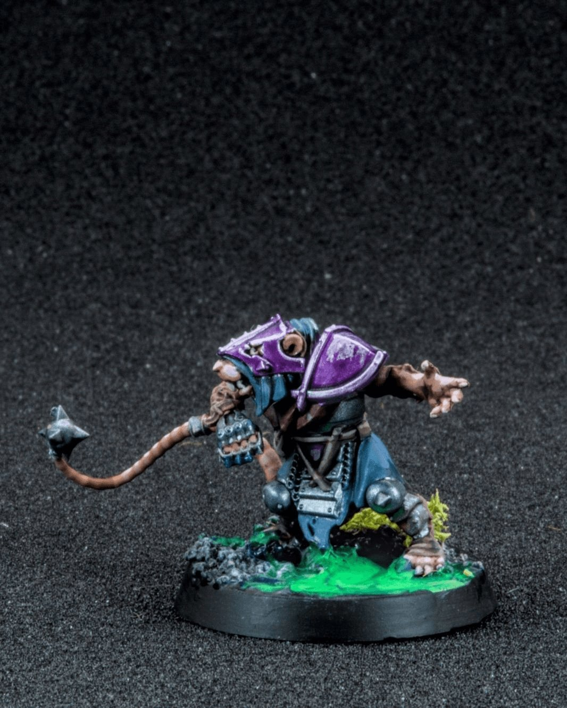

Skaven: speed over teamwork
The Skaven don’t really believe in teamwork… they believe in speed, chaos, and getting out of the way before something explodes. 🐀
In the world of Blood Bowl, Skaven teams like the infamous Skavenblight Scramblers rely on lightning-fast gutter runners and vicious blitzers to dart through defenses before anyone realizes what happened. Blitzers are the muscle of the team, the rare rats who can actually take a hit and keep moving. While the rest of the roster is busy scheming, sprinting, or occasionally tripping over their own tails, the blitzer’s job is simple, smash a hole in the line and let the swarm pour through.
This one was a fun little project, especially playing around with the base. I’ve been experimenting with brighter effects lately, and the glowing green sludge felt perfectly on brand for Skaven (if something in the Under-Empire is bubbling… it’s probably warpstone). The purple armor was a nice chance to push some highlights too, a little pop of color against all the grimy rat textures. Honestly, the base might be my favorite part on this one, there’s something satisfying about a rat charging straight through toxic goo like it’s just another Tuesday.
@warhammerofficial @bloodbowl_official @best4minis @best.of.miniatures @coolminiornot
#MiniaturePainting #BloodBowl #Warhammer #Miniatures #TabletopGaming 🐀